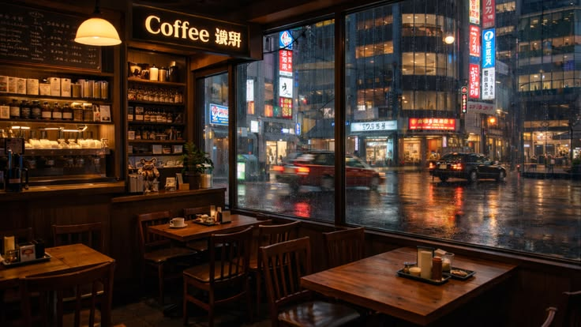

Inspired by the romantic streets of Paris and the timeless cafés of Rome, V NOIR Café brings a luxurious European experience to your city. A place where coffee meets art, conversations meet comfort, and every sip feels like a journey.

Elegant black facade, warm golden lighting, vintage lanterns and floral balconies — our exterior is designed to feel like a hidden café in Europe with Premium Qulaity
Velvet chairs, marble tables, candle-lit ambience and classical jazz music — every corner is crafted for aesthetic moments and unforgettable memories.
✨ Handcrafted Italian espresso
✨ French pastries baked fresh daily
✨ Romantic evening candle dining
✨ Premium European desserts
✨ Luxury private seating